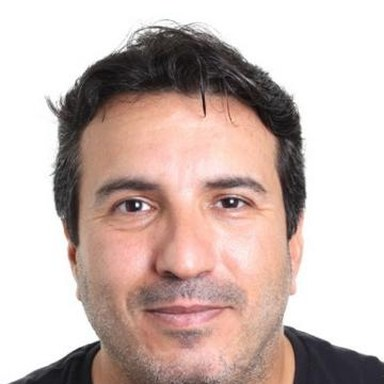
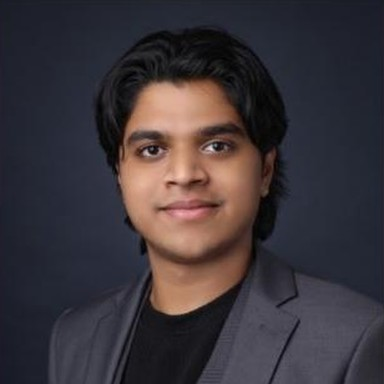

REACH Lab
People
Postdoctoral researchers, PhD students and undergraduate researchers working with Fares J. Abu-Dakka at New York University Abu Dhabi.
Principal investigator

Fares J. Abu-Dakka
Fares J. Abu-Dakka is Assistant Professor of Mechanical Engineering at NYU Abu Dhabi and director of the REACH Lab. His research enables robots to acquire skills from demonstration and interaction, with applications in geometric control and physical human–robot interaction, for safer and more adaptive manipulation. He earned his PhD in Robotics from the Polytechnic University of Valencia and joined NYU Abu Dhabi in 2024, after positions at Aalto University, the Technical University of Munich and Mondragon University. He is an Associate Editor of the International Journal of Robotics Research and the IEEE Transactions on Robotics, and Senior Editor for ICRA 2027.
Postdoctoral researchers

Hozefa Jesawada
The research covers safe learning-based control for soft and continuum robots. It also develops Grassmannian methods for null-space control.
Hozefa Jesawada is a Postdoctoral Researcher at New York University Abu Dhabi. He earned his PhD in Information Technologies for Engineering from the University of Sannio, Italy, and subsequently worked as a postdoctoral researcher at the University of Salerno. His research focuses on reliable decision-making and control for robotics, combining tools from optimization, uncertainty-aware learning, inverse optimal control, and robust planning.
He is particularly interested in how principled learning methods can support embodied intelligence in real robotic systems, including manipulation, model-based formal control, and safety-aware autonomy.

Nilay Kushawaha
The research focuses on continual learning for robot manipulation. It also studies cross-embodiment transfer, so that skills carry over between different robots.
Nilay Kushawaha is a Postdoctoral Associate at NYU Abu Dhabi, with a Ph.D. in Biorobotics and AI from the Scuola Superiore Sant'Anna, Italy.
His research focuses on continual learning, brain-inspired AI, and adaptive robot control. He develops algorithms that let robots keep learning and adapting across their lifetime, the way humans do. His work spans both soft and rigid robotic systems, combining machine learning, robotics, and physics to build more intelligent and autonomous robots.
Keywords: Continual Learning, Incremental Learning, Learning from Demonstrations, Reinforcement Learning, Soft & Rigid Robotics, Sensor Fusion.
PhD students

Ikhlas Ben Hmida
The research covers the modelling and design of a soft prosthetic hand. It also explores data-driven decoding of hand and finger motion from surface electromyography.
Ikhlas Ben Hmida is a Global Ph.D. fellow from NYU Tandon School of Engineering and a visiting graduate research assistant at the REACH Lab at NYUAD, where she is conducting her PhD research.
Her research interests include soft robotics, bio-inspired systems, and medical applications of robotics. She is currently exploring data-driven approaches to decoding hand and finger motion from surface electromyography (sEMG) to advance human-machine interfaces and dexterous prosthetic and assistive hands.

Dean Pretorius
The research applies Koopman-operator methods to nonlinear dynamics. It focuses on systems with switching and contact.
Dean Pretorius is a student of the PhD in Astrophysics and Space Systems (PASS) program at NYUAD. His research interests are in understanding how robots adapt to discontinuous movements in the real world. During his PhD, he will be pushing the boundaries of science and engineering to understand how robots adapt to discontinuous movements in space.
In 2022, Dean graduated from Stellenbosch University in South Africa with a B.Eng in Electrical and Electronic Engineering.
Narayana Reddy Marthala
The research covers contact control for space robots. The robots studied are dual-arm and free-floating.

Omar Mostafa
The research is on stable robot learning, including stable dynamical-systems control. It also covers vision-language-guided policy learning and simulation environments for manipulation.
Omar Mostafa is a Global PhD student in Electrical and Computer Engineering. His research interests are robot learning and control, with a focus on physics-informed reinforcement learning and world models for robotic manipulation.
Previously: Graduated magna cum laude from NYU Abu Dhabi with a bachelor’s degree in Electrical Engineering.
Undergraduate researchers

Aman Sunesh
The research is on robot manipulation with a collaborative arm. It covers object retrieval and handover.
Alumni
- Costanza Armanini